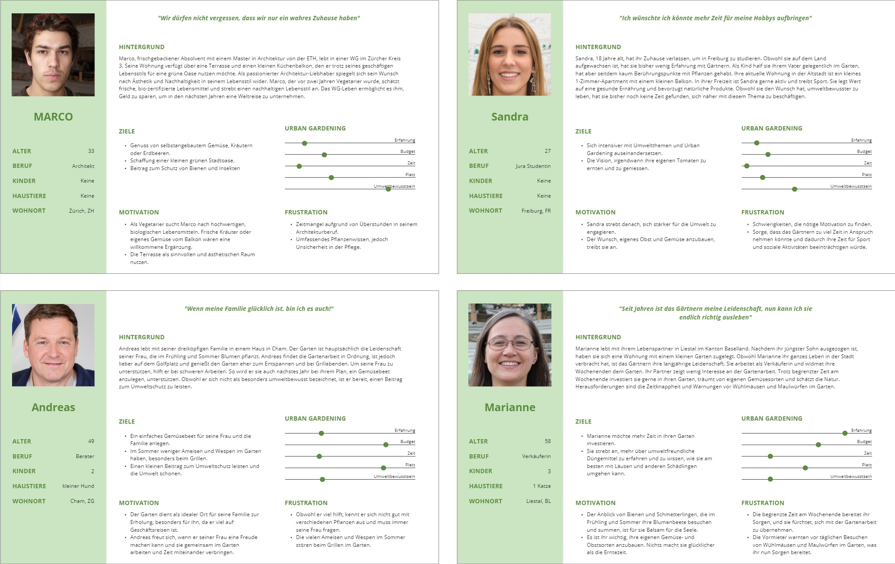

Planty Life
2020UCD, User Research, Prototyping
Background
In the seminar "Conception and Prototyping" during my studies in "Information Science" at the Fachhochschule Graubünden, I, along with a group of four students, developed a concept for an app to support Urban Gardening.
Urban Gardening is the sustainable practice of cultivating plants and vegetables in urban areas, utilizing small spaces such as balconies, rooftops, or community gardens. Local food cultivation in urban areas reduces CO2 emissions by using shorter transportation routes. The establishment of urban gardens also promotes biodiversity, contributing to ecological diversity. Recycling small urban spaces minimizes the need for new sealing and contributes to land reuse.
The project aimed to develop an app that contributes to spreading the idea of a sustainable lifestyle in urban areas, motivating individuals to engage in Urban Gardening and providing support for their efforts.
User Research
To gather comprehensive insights into potential users, the project team developed a questionnaire targeting individuals residing in urban areas. A total of 50 people participated in the survey. In addition to the surveys, the team conducted eight interviews with selected participants to explore the problems, interests, needs, and current habits of users in the context of gardening. The objective was to gain a well-informed understanding of the user context.
The project team utilized Miro to structure insights from the survey and interviews using an Affinity Diagram.

Following this, four personas were created to represent the needs, goals, and behaviors of the target audience.
For each persona, problem scenarios were created, allowing the derivation of user requirements for the future app.
Ideation
Based on the insights into potential users, we developed the following Point-of-View Statement, emphasizing our focus on their needs:
"Enthusiasts need a solution that supports and motivates them to use their potential spaces for gardening in an environmentally friendly way. This way, they can not only make a contribution to the environment but also grow their own food."
To generate specific solution approaches, we are now transitioning from this statement to our ideation phase. In an initial brainstorming session, we examined possible problems, and using the "How Might We" method, we collected solutions. Ideas included sharing gardening photos in the style of social media platforms, a comprehensive plant wiki, a chat for assistance with questions, FAQs, a reminder function to support plant care, and a personal survey to understand the starting point in profile creation for tailoring solutions to individual gardening projects.
In another session, using the "Crazy 8" technique, various ideas were sketched for the identified problems. In this method, participants quickly draw or generate eight rapid sketches or ideas for a specific problem within a short timeframe (typically eight minutes).
Design
After developing a broad range of creative ideas in the ideation phase, we focused on selecting and refining the most promising concepts. From these, we developed solution scenarios based on the previously created problem scenarios. These aim to create realistic representations of potential solutions for identified issues, allowing for better understanding, evaluation, and further development of design proposals before the implementation phase begins.

In addition, a storyboard was created to visualize the use of the app in a specific user context.
Subsequently, the information architecture of the app was created. All relevant contents were gathered, and a card sorting was conducted, structuring and sorting them on a Miro board. This process served as the foundation for developing a user-friendly information architecture, ensuring that the contents are intuitively arranged and accessible.
Prototyping
Building upon the earlier concepts, the team created a low-fidelity paper prototype. This involved physical sketching using simple symbols and handwritten notes. The iterative process allowed for early feedback incorporation, basing fundamental design decisions on real user interactions.
Following the successful iteration of the low-fidelity paper prototype, wireframes were created to provide a digital visualization of the design. The focus was on defining basic structures and layouts, with the process gradually covering key pages and functions.
Based on the wireframes, a clickable high-fidelity prototype was developed in Figma, providing a realistic user experience through detailed visual elements, colors, and interactions. This facilitated comprehensive user testing and early feedback for adjustments and improvements.
The app includes an initial questionnaire, providing users with personalized plant recommendations. The home screen allows for the organized management of upcoming tasks for their plants and grants access to personalized recommendations.
The plant wiki offers comprehensive information on various plants, while the gallery provides the opportunity to share pictures and browse through others' contributions. In the First Aid section, users receive assistance with problems and can access tutorials and the forum.
Finally, there is the Impact section, where users accumulate sustainable points for their plant activities, providing insight into their personal contribution to sustainability.